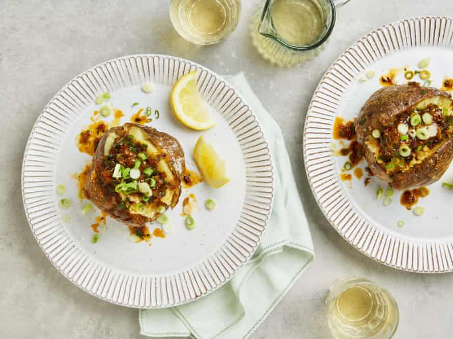

Baked potato with onion and harissa butter

I’ve given instructions for cooking these indoors, in the oven, but if the sun is shining and you have a barbecue, wrap the potatoes in foil, pierce both the foil and the spuds, then grill, turning regularly, for an hour, until very soft inside. Needless to say, these go especially well with any sausages that might happen to be cooked alongside.
For the onion and harissa butter
Heat the oven to 220C (200C fan)/425F/gas 7. Rub the potatoes all over with the oil and a tablespoon of salt, so the salt sticks to the skins, and place on a baking tray lined with greaseproof paper. Bake for an hour and 20 minutes, until soft all the way through.
Meanwhile, make the onion and harissa butter. Put the oil, onions and three-quarters of a teaspoon of salt in a large saute pan, set it over a medium-high heat and cook, stirring often, for 16-18 minutes, until very soft and deeply golden brown. Tip into a bowl, add all the other butter ingredients and a good pinch of flaked salt, and mix well.
Once the potatoes are cool enough to handle, split them open down the middle and squeeze the ends to open them out a little. Sprinkle with more flaked sea salt, then top with a generous spoonful of the onion and harissa butter. Finish with the sliced spring onions and serve with the lemon wedges for squeezing over.